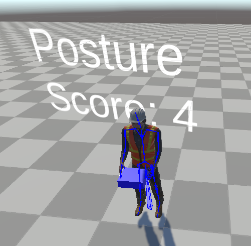

About
I am a Ph.D. student in Electrical and Computer Engineering, specializing in machine learning and data science, at UC San Diego and San Diego State University. I am advised by Prof. Reza Akhavian and Prof. Nikolay Atanasov.
My research focuses on robot planning under constraints that extend beyond collision checking, especially high-dimensional and human-facing requirements. I received my B.S. in Cognitive Science, specializing in Machine Learning and Neural Computation, from UC San Diego.
Research Interests
I study how robots can plan safe, useful actions when geometric collision checks alone are insufficient. My work develops ways to represent and satisfy higher-dimensional constraints involving robot state, task context, and people, including ergonomic risk in human-robot interaction. I use semantic scene representations, language-guided planning, and learning-based methods to bring these constraints into robot decision-making.
Experience
Autonomy Engineer Intern · Michael Baker International
Extended VidMap’s structure-from-motion pipeline with multi-camera bundle adjustment, IMU-based gravity alignment, and support for fisheye and equirectangular cameras. Increased reconstruction acceptance rates from 40% to 85% on large buildings, including schools and stadiums. Also developed open-vocabulary asset extraction and dynamic Gaussian splatting methods.
AI Engineer Intern · AstreaX
Built a vision pipeline for low-light maritime hazard detection, including synthetic data generation and a custom deformable transformer model that achieved an 87.8% F1 score on held-out tests.
Research Assistant · SDSU & UC San Diego
Develop robot planning, semantic mapping, and safety methods using language models, building information models, and ROS 2. I also mentor undergraduate researchers working on robot autonomy.
Software Engineering Intern · San Diego Zoo Wildlife Alliance
Develop computer vision and sensor-data pipelines for wildlife monitoring, including detection of burrowing owls, bats, and potential predators.
Publications
- M. Amani and R. Akhavian (2024). “Intelligent ergonomic optimization in bimanual worker-robot interaction: A Reinforcement Learning approach.” Automation in Construction, 168, 105741. doi:10.1016/j.autcon.2024.105741
- M. Amani and R. Akhavian (2025). “Safe and trustworthy robot pathfinding with BIM, MHA*, and NLP.” Construction Robotics, 9, article 18. doi:10.1007/s41693-025-00161-1
- M. Amani, B. Beheshti, and R. Akhavian (2026). “Bootstrapped LLM Semantics for Context-Aware Path Planning.” ASCE International Conference on Computing in Civil Engineering (i3CE). Preprint
- M. Amani and R. Akhavian (accepted, 2026). “Digital Twin-Guided Robot Path Planning: A Beta-Bernoulli Fusion with Large Language Model as a Sensor.” Journal of Computing in Civil Engineering. Preprint
- A. Palacios, V. In, and M. Amani (2024). “Disorder-Induced Dynamics in Complex Networks.” International Journal of Bifurcation and Chaos, 34(5), 2430010. doi:10.1142/S0218127424300106
- R. Ashe, M. Amani, C. Sommerfield, and R. Akhavian (2025). “A Customized Quadruped Control and Sensor Integration Framework with a Construction Worker Activity Recognition Module.” Computing in Civil Engineering 2025, 708–712. doi:10.1061/9780784486443.077
- M. Amani and R. Akhavian (2024). “Adaptive Robot Perception in Construction Environments Using 4D BIM.” Computing in Civil Engineering 2024, 679–687. doi:10.1061/9780784486115.072
- Z. Dai, T. Fan, M. Amani, J. Seo, K. M. B. Lee, H. Oh, and N. Atanasov (2026). “Kernel-SDF: An Open-Source Library for Real-Time Signed Distance Function Estimation using Kernel Regression.” IEEE Robotics and Automation Letters. doi:10.1109/LRA.2026.3719228
- R. Akhavian, M. Amani, J. Mootz, B. Beheshti, and R. Ashe (2026). “Semantic-Gravity Iterative Closest Point and AI-assisted navigation for Robot-Ready Construction Digital Twins.” Automation in Construction, 190, 107134. doi:10.1016/j.autcon.2026.107134
Recent Projects
Quadruped Control for Worker Activity Recognition — A modular mission-planning system with a BIM-based 3D environment and a self-labeling method for activity data.
Ergonomic Optimization for Human-Robot Interaction — A Q-learning method that optimizes bimanual handovers using Rapid Entire Body Assessment (REBA) scores.

MOLE Annotated — A beginner-friendly tutorial on numerical PDE solvers and mimetic discretization.